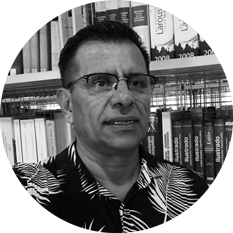

Lecturas compartidas en la escuela Cura Brochero
Las actividades de lectura entre docentes en la escuela Primaria Cura Brochero –de la ciudad de Córdoba– surgieron al inicio de 2023 con el objetivo de generar instancias de reflexión y diálogo en torno a temas relevantes que permitieran enriquecer las reuniones de personal y fortalecer la formación docente, estableciendo comunidades de aprendizaje.
Se transitaban, pospandemia, cambios profundos en todo sentido. Entre ellos, el equipo docente de la institución –con 34 integrantes– y el equipo directivo –constituido por una directora y dos vices– acababa de renovarse. El 47 % del plantel docente era suplente y la directora se había jubilado en marzo del 2023, por lo cual se necesitaba aunar criterios y revisar acuerdos.
Una de las primeras decisiones fue revisar el enfoque y el marco teórico de los distintos campos curriculares y, además, establecer tanto la bibliografía como los autores que guiarían el proyecto curricular. Se definió empezar por ciencias sociales, ya que era una necesidad. Por ello, se propuso la lectura del libro Ciencias Sociales en la escuela, de Isabelino Siede. Para su lectura, se estableció un plazo de 30 días y se asignaron capítulos a distintos grupos de docentes, conformados por un miembro del equipo directivo, maestros de grado, de Jornada Extendida y de Ramos Especiales. Cada equipo debía decidir la manera de registrar las ideas o conceptos centrales del capítulo; por ejemplo, en un afiche, con un PowerPoint, etc. El encuentro se llevaría a cabo en el horario de la reunión de personal, de 18 a 20 horas.
En el marco de este primer encuentro de lectura, los docentes comentaron y explicaron cada capítulo, generando una instancia de reflexión, diálogo y debate en torno a la forma de enseñar las ciencias sociales. Se acordó realizar talleres por grados, en vez de los actos rutinarios, para el tratamiento de efemérides. Al final de esta primera reunión, se creó una pequeña muestra que se expuso para que estudiantes y familias pudieran ver las actividades realizadas por los docentes durante la jornada. Este tipo de actividad permitió la lectura y análisis de cuatro libros durante el ciclo 2023.
Al iniciar las primeras reuniones de febrero del ciclo 2024, y retomando la autoevaluación institucional, se consideró la actividad como una fortaleza y se decidió avanzar en otros tipos de textos, relacionados con la enseñanza y el aprendizaje, en pos de mejorar las trayectorias escolares. En el marco de la autoevaluación, se sostuvo que este espacio había permitido la lectura individual y compartida entre colegas, lo que ayudaba a la profundización en el análisis de la bibliografía seleccionada. Se había logrado establecer una comunidad de aprendizaje entre docentes que, por cierto, había traspasado las paredes de la escuela, ya que los participantes comentaban lo que sucedía a colegas de otras instituciones.
En la segunda etapa del 2024, el equipo directivo acompañó, en las reuniones de personal, a tres escuelas de la zona 1191 que estaban interesadas en iniciar este tipo de acciones. Al finalizar el ciclo 2024, se leyeron cinco libros y diversos artículos y documentos relacionados con la enseñanza y el aprendizaje.
Cuando llegó la invitación de ISEP de registrar fotográficamente este tipo de jornadas de trabajo, consideramos que se trataba de una instancia muy valiosa e inmediatamente pusimos en conocimiento a los docentes. Se convocó a todo el plantel y se organizaron tres equipos, asignando los textos que posteriormente trabajarían en distintos espacios; como puede verse en las fotografías, trabajamos en el patio (fotos 6 y 9), en la biblioteca (fotos 8 y 16) y en un aula (fotos 22 y 23).
Transcurrían las semanas y observábamos que no se registraban avances en la lectura. Lo constatamos al hablar con los docentes de los distintos equipos. Desde el plantel directivo consideramos importante dar pistas sobre los textos y autores a partir de las lecturas realizadas por nosotras, ya que algunos eran realmente complejos. Esto permitió avanzar en la lectura. Las diversas perspectivas desde las cuales los docentes hicieron sus propias interpretaciones quedaron registradas en sus apuntes, anotaciones y marcas; por ejemplo, en la foto 5 se puede ver lo escrito por una de las docentes.
El encuentro se realizó a partir de las 18 horas y finalizó pasadas las 20.30, fuera del horario de clases. Si bien la jornada estaba pautada para realizarse en dos horas, siempre sucedía lo mismo: el tiempo se pasaba volando y leer con otros permitía no solo la reflexión, sino el diálogo tanto entre los lectores-docentes como con los autores de los libros, por lo que los participantes permanecían más del tiempo pautado (ver fotografías 12 y 13).
Iniciamos la jornada en el SUM (foto 3). Posteriormente, cada grupo se dirigió al espacio acordado y se procedió a la lectura; al finalizar el tiempo pautado, regresamos al SUM y realizamos la puesta en común, en la cual cada grupo explicó el texto leído. Algunos reflejaron la lectura en afiches, otros la plasmaron en una especie de pergaminos. Esto se muestra en las fotografías 29, 30 y 32.
Lo que surgió por una necesidad se fue transformando en un espacio no solo de estudio, sino también de conversación sobre lo leído, ya sea de manera profunda o exploratoria. Durante la jornada, todos participamos y nos quedamos con ganas de seguir leyendo y de finalizar lo que no se había concluido. También compartimos un mate (foto 18), algo rico y, en algunos casos, la compañía de los hijos (foto 23), porque era un momento de fortalecimiento a nivel profesional y personal. Algunas docentes, que recién se iniciaban en la docencia y que habían tomado el cargo de Jornada Extendida durante el ciclo 2024, venían después de finalizar sus horas en otras escuelas para sumarse a la lectura e iniciar un recorrido lector que hasta el momento era desconocido para ellas.
La silla de la foto 34 no significa el vacío silencioso de la escuela o la soledad de la tardecita cuando todos se van: es la invitación a quienes quieran sumarse y, de esta manera, seguir transformándose para lograr entre todos una escuela posible desde la voluntad que cada uno le imprima.
Es importante destacar que este proyecto no se escribió en papeles en sus orígenes. Se gestó desde la necesidad y así creció, fortaleciendo a un grupo de personas, de profesionales, que juntos fuimos capaces de hacer que las cosas sucedieran. Cuando nos dimos cuenta de lo que se estaba generando, iniciamos su escritura formal.
Al inicio del 2025, tres escuelas más de la zona 1191 empezaron a leer y estudiar para seguir creciendo y reflexionando profesionalmente.
⥈

Maria Elda Márquez es Profesora de Enseñanza Primaria y Licenciada en Ciencias de la Educación. Desde el año 2016 forma parte del Equipo de gestión del C. E. Cura Brochero como vicedirectora y desde mediados del 2022 hasta marzo del 2025 como directora del mismo. Actualmente forma parte del Equipo Técnico de Matemática de la Subdirección de Desarrollo Curricular y Acompañamiento Institucional.